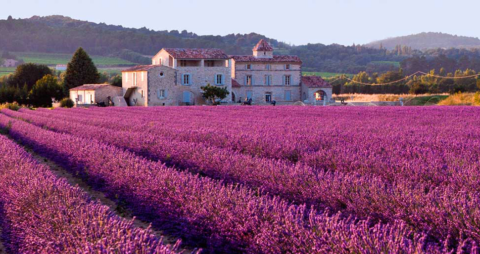

Франция с севера на юг. Краски прованса. Часть первая
10 • АВГУСТА • 2016Кто не слышал о Провансе? Вы можете удивить своих друзей или знакомых упоминанием Аквитании, Пикардии или Оверни – но о Провансе слышал каждый.
Книги Питера Мейла, воспевшего этот небольшой, но очень привлекательный кусочек Франции, переведены на русский язык и продаются с большим успехом. Даже если вы их не читали, то наверняка слышали о прованском масле, прованских травах и соусе "Провансаль". То, что этот регион полностью называется Прованс - Альпы - Лазурный берег, никого не смущает: Прованс, как называли его исторически, он Прованс и есть.
Расположенный на границе с Италией, омываемый лазурными водами Средиземного моря, Прованс многие тысячелетия был очагом цивилизации и плавильным котлом, в котором причудливо смешивались многие культуры - греческая, галльская, римская, арабская, германская… Здесь одинаковое раздолье как для любителей истории и архитектуры, которых привлекут остатки древнеримских построек и былое величие папского дворца в Авиньоне, так и для гурманов, миллионы которых прибывают в Прованс, чтобы попробовать знаменитый суп буйабес, оливки и оливковое масло, прованские вина и пастис. Разумно сочетая оба интереса, мы попросту не могли проигнорировать Прованс, а вот придумать более эффектный способ поставить точку в своем путешествии (Париж не в счет) вряд ли возможно. От Лиона до Авиньона чуть больше двухсот километров строго на юг, но вы, полагаю, согласитесь с тем, что ехать по прямой - скучно и неинтересно, особенно когда вокруг открываются такие живописные виды на
 Главное, что бросается в глаза в Провансе – оливки. Они везде.Другой мир
Возможно, если ехать в Прованс по обычной дороге, все вокруг будет меняться постепенно, и разница покажется не такой разительной. Мы же, съехав с платной трассы, по которой промчались полторы сотни километров, испытали ощущения сродни тем, что бывают, когда выходишь из самолета: все вокруг настолько другое, что буквально бросается в глаза. Замки непривычных очертаний, окруженные оливковыми рощами. Населенные пункты, названия которых указаны на двух языках французском и провансальском. Роскошные шато, в облике которых чувствуется явный южный акцент. Наконец, теплый ветер, долетающий со Средиземного моря, и совершенно не по-ноябрьски палящее солнце, от которого в прямом смысле приходится прятаться.
История
Осмотреть окрестности Авиньона все равно что пролистать книгу, объемную, познавательную и захватывающую. Больше века история Авиньона была неразрывно связана с папским двором. Сначала семь десятков лет так называемого Авиньонского пленения пап”, начавшегося с переездом Климента V из Рима в Авиньон в 1309 году. "Пленением", впрочем, это можно назвать только условно семь понтификов, которые сменилось за это время на римском престоле (именно римском, поскольку ubi Papa, ibi Roma где папа, там и Рим), пользовались в выкупленном ими Авиньоне всеми правами, а когда папа Григорий XI решил вернуться в Рим, ему никто не препятствовал. С окончанием “пленения” не заканчивается, однако, история авиньонских пап в результате так называемого Великого западного раскола, наступившего после смерти Григория XI, кардиналы объявили только что избранного папу Урбана VI душевнобольным, а его выборы незаконными. Так что пустовать папскому дворцу в Авиньоне пришлось недолго новым папой был избран Климент VII, который тотчас в него вернулся. Оба папы тут же объявили друг друга антипапами и стали проводить свою политику по привлечению сторонников, фактически расколов католический мир на два лагеря. Наследник Климента VII, Бенедикт XIII, от политики своего предшественника отказываться не стал. Собор в Пизе, задуманный как средство примирения пап, низложил обоих и возвел на престол третьего папу Александра V. Наконец, еще один собор, на сей раз в Констанце, низложил всех троих и избрал четвертого папу, Мартина V. Эта вакханалия, видимо, могла бы продолжаться еще долго, но двое из пап признали законность выборов нового понтифика, а оказавшийся в меньшинстве и отреченный от церкви Бенедикт XIII был вынужден оставить Авиньон и удалиться в Испанию.